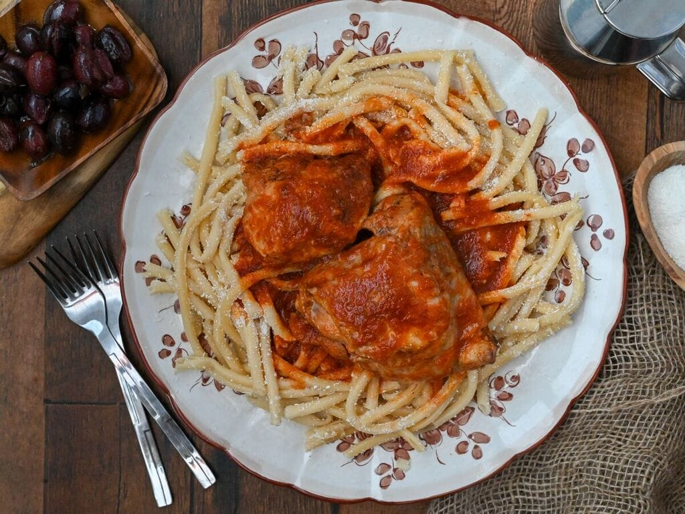

Braised Rooster with hand made pasta

Description
The dish is popularized in greece and contains a slow cooked rooster in wine and tomato sauce and served with hand made twisted pasta
Instructions
- Heat the oil and fry the pieces of rooster until browned on all sides.
- Add the wine, tomatoes, the tomato paste dissolved in a little water, the cinnamon, cloves, salt and pepper.
- Simmer the rooster over a low heat until tender, about 1 hour.
- Add a little extra hot water while it cooks, if necessary.
- Boil the pasta in salted water according to instructions.
- Strain the pasta.
- Remove the rooster pieces from the saucepan, and dispose of the cinnamon stick and the cloves.
- Add the spaghetti to the saucepan and bring to the boil once before removing from heat.
- Stir to ensure sauce is evenly distributed.
- Serve the rooster with the spaghetti on a large serving dish, and sprinkle with grated cheese.
Home